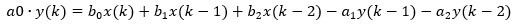
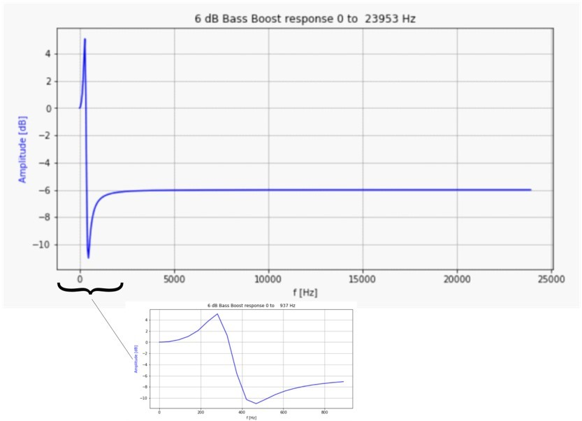

Architecture
The application runs on two target boards, as follows:
- 1.
SAM E70 Xplained Ultra Board
Processor runs @ 300 MHz
One push button (SW)
Two LEDs (amber LED1 and green LED2). Only LED 1 can be used for a USB Device application, due to requiring VBUS sense to be selected rather than LED2.
WM8904 Codec Daughter Board mounted on a X32 socket (configured as I2SC1 Master)
USB Device interface

Note: The SAM E70 Xplained Ultra board does not include the WM8904 Audio Codec daughterboard, which is sold separately on microchipDIRECT as part number AC328904.
- 1.
PIC32 MZ EF Curiosity 2
Processor runs @ 200 MHz
4 push buttons (SW1-SW4)
3 LEDs (all red LED1-LED3) and RGB LED (LED4).
AK4954 Codec Daughter Board mounted on X32 socket
USB Device interface
Note: The PIC32 MZ EF Curiosity 2 does not include the AK4954 Audio Codec daughterboard, which is sold separately on microchipDIRECT as part number AC324954.
The usb_speaker_bass_boost application uses the MPLAB Harmony Configurator to setup the USB Audio Device, codec, and other items in order to play back the USB audio through the Codec Module.
The USB Host system that can provide streaming audio (like a PC) is connected to the micro-mini USB device connector. The application then detects the cable connection, which can also supply device power; recognizes the type of connection (Full Speed); enumerates the devices functions it can provide to the host, and then selects the isochronous audio streaming playback. Audio stream data is buffered in 1 MS frames for playback using the WM8904 Codec daughter board. Audio is heard through the Headphone jack (HP OUT).
A USB Host system is connected to the micro-mini USB device connector. The application detects the cable connection, which can also supply device power; recognizes the type of connection (Full Speed); enumerates its functions with the host, isochronous audio streaming playback through device. Audio stream data is buffered in 1 MS frames for playback using the WM8904 Codec daughter board. Audio is heard through the Headphone jack (HP OUT).
Bass Boost Filter
The �Bass Boost� audio enhancement is the 16 bit fixed-point implementation of a "Peak Shelving Filter", described by:

NOTES:
- 1.
The parameter "K" sets the transition frequency, Fc, above where the boost goes away.
- 2.
The parameter "V0" sets the boost or cut value in dB
- 3.
The parameter �root2� adjusts the slope of the transition (replaces square root of 2) Giving the coefficients of 2nd-order difference equation:

The Direct-Form 1 implementation (without scaling) is shown below:
Figure 1. Biquad Filter - Direct Form 1
The a0 scaling parameter can assumed to be 1, but for fixed point coefficient multiplies the right hand side coefficients should be scaled to fit into the required �Q� format. See LIBQ or CMIS-DSP library documentation for the defined Q formats for fixed point values required by the library.
The response of the filter for a bass boost of 6dB and a cutoff of 200Hz is shown below

Figure 2. Peak Shelving Filter Frequency Response, Fc=200 Hz, Gboost = 6 dB
The gain is boosted below ~350 Hz and attenuated by -6dB above 800Hz, with a transition in between. the -6dB attenuation of the upper frequencies give headroom such that the boost does not overly saturate the audio output.
Figure 3. USB Speaker w/Bass Boost - Block Diagram